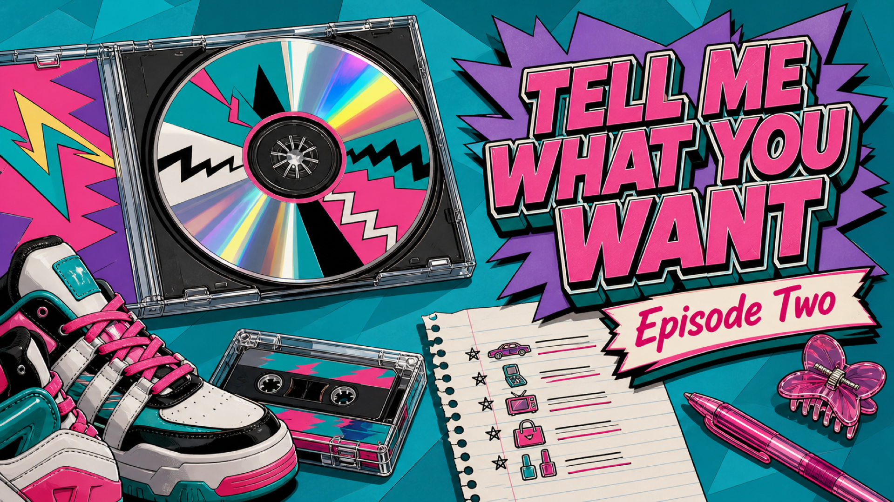
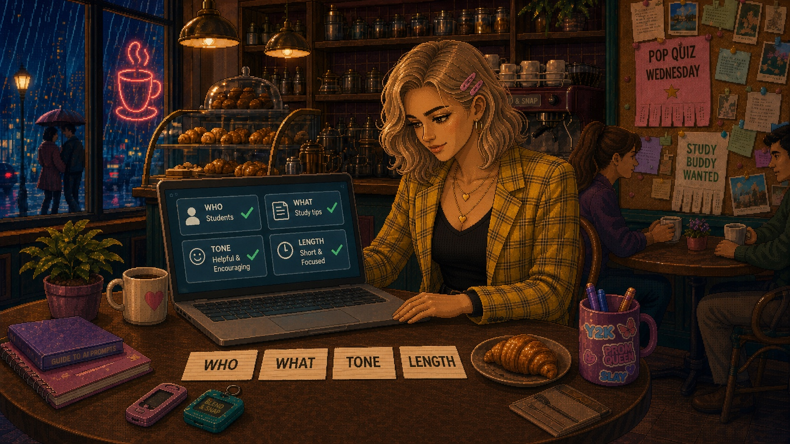
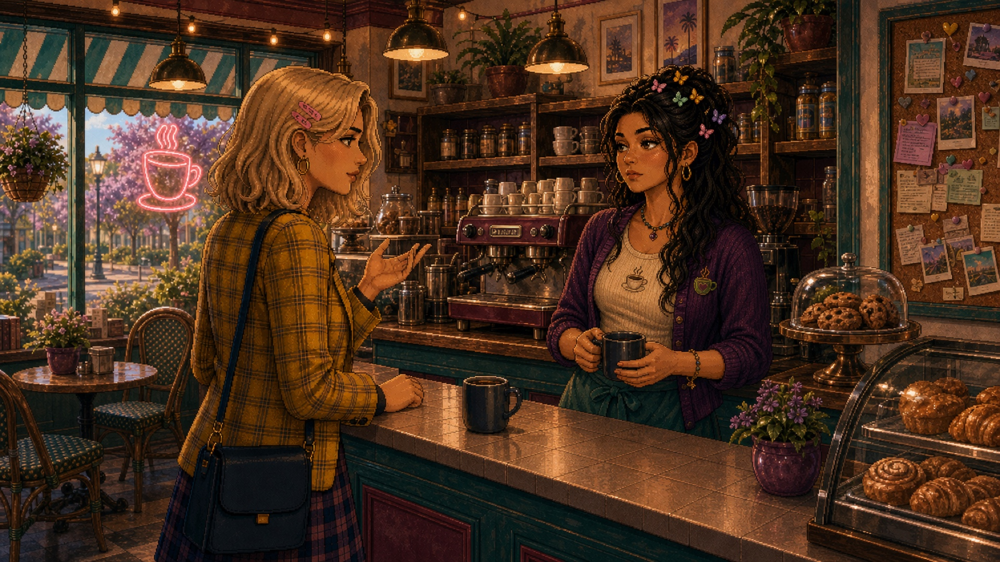
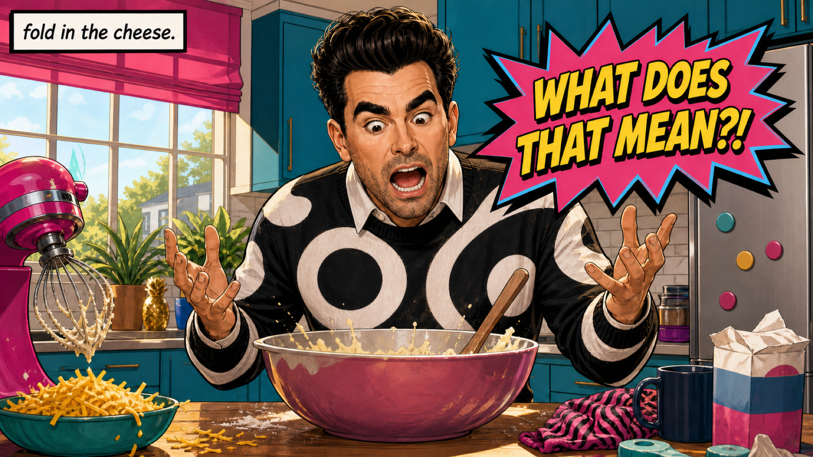
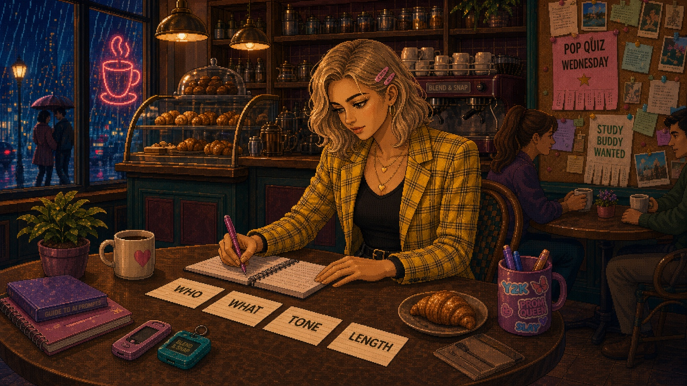
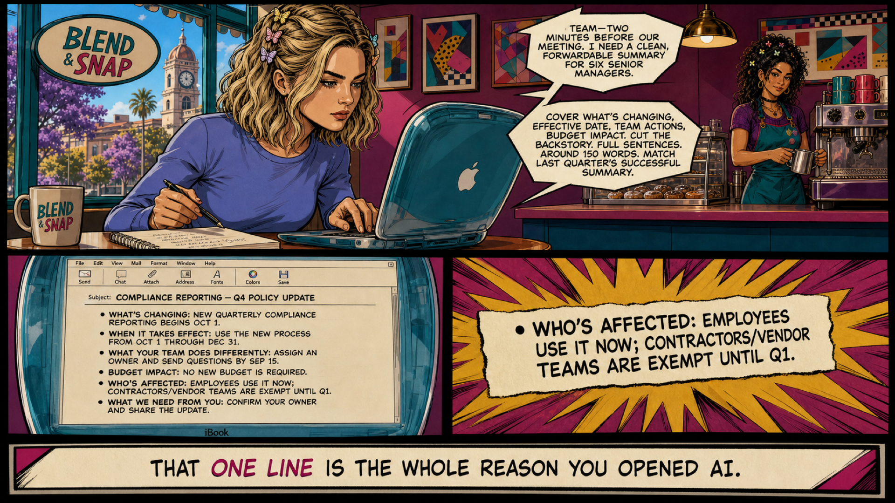
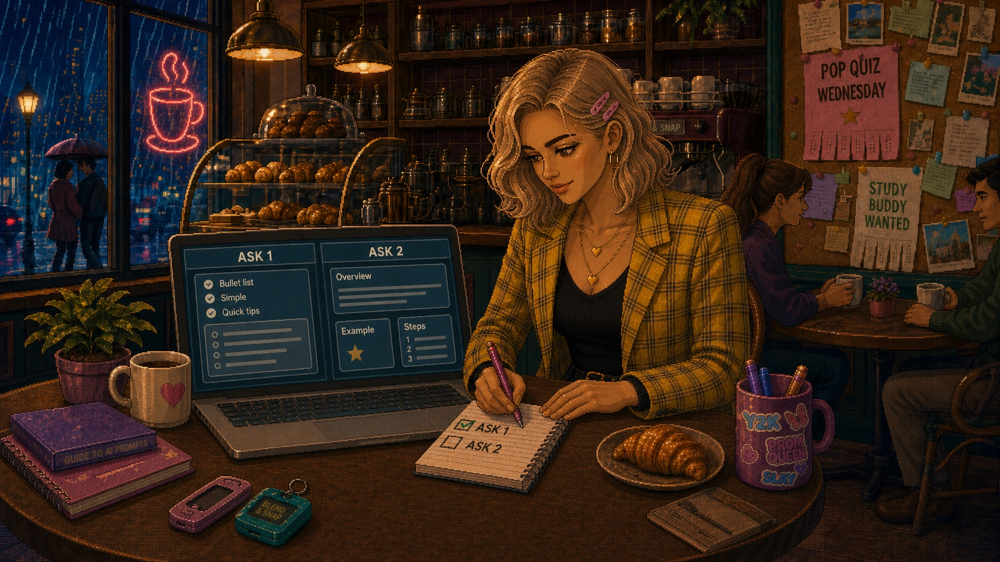

◀◀ Previously, on LAiDIES
Our heroine stopped feeling behind and finally stopped putting it off — one avoided email, nine seconds flat, and the realization that AI is just the most talented new hire she'll ever manage. She held auditions: one task, all three tools, and picked her favourite.

It's nine-fifteen on a Tuesday, and I am losing a staring contest with a paragraph.
I'd asked one of the AI tools to draft talking points for a meeting, and what it gave back is… technically words: "leverage synergies," "drive alignment," "circle back to maximize stakeholder buy-in." It reads like a motivational poster that went to business school and came back worse.
And the maddening part? Yesterday, the same tool wrote me a project update for my director that I barely had to touch. Same app. Same me. Same tragic office lighting. One day it reads my mind, and the next it hands me a throw pillow.
Why does AI read my mind some days, and completely ignore me on others?
The variable wasn't the tool

So I did what I do with any problem I can't out-stubborn at my desk: I took it to town. Corner table at the Blend & Snap, oat latte, KSVL on low. I pulled both drafts back up — the word-salad from that morning, the director update I'd barely touched — and set them side by side. It wasn't the tool that changed between the two. It was me: what I'd typed to get each one.
AI can't read your mind. What's in your head stays in your head until you type it out — and the tool works with your words, and nothing else.
The brand-new café across town

Think about your coffee order. At your regular spot, you barely have to say it — they know your usual, because you built that over a hundred Tuesdays. But AI is not your regular spot. It's the brand-new café across town, and if you breeze in and say "the usual," you get a blank look — or a plain drip going cold on the counter, which you can't even be mad about, because you never told the barista what you actually wanted to drink.
The AI isn't holding out on you — it genuinely can't see what you didn't say. It has your words, and nothing else. Not your job, not who's reading this, not the meeting on your calendar. Every detail you leave in your head is one it's forced to guess at. So you spell it out — every time — and the guessing stops. That's context.
Tell me what you want, what you really, really want
The Spice Girls had this figured out decades ago. (Wait… decades? Oof. That's a jagged little pill to swallow, but here we are.) "Tell me what you want, what you really, really want." They weren't gesturing at a vibe. They wanted specifics. AI is exactly the same: it'll zig-a-zig-ah all day, but it only does useful work when you tell it precisely what you need. That ask is the prompt.
The David Rose School of Prompting

Our patron saint this week is David Rose — and yes, we know, he's not exactly from the Rewind Era (1990–2010). But he's so fabulous we made one exception. (In the immortal words of Shakespeare: a Rose by any other name…) If you've seen Schitt's Creek, you know David is pathologically specific — the wine, the sweater, the exact drape of the sweater.
You remember Moira telling David to "fold in the cheese," and David standing in that kitchen screaming, "WHAT DOES THAT MEAN?!" That is your AI, every single time you type "write me an email about the project." It's trying. But you handed it "fold in the cheese" — when what it needed was "scrape the spatula along the bottom of the bowl, lift, turn it over, turn the bowl, and repeat."
Brief it like a new hire

The fix turned out to be something I already knew how to do. I stopped typing at AI like a Google search — three vague words, fingers crossed — and started briefing it like a smart new hire in her first week. Every one of these is a question you already ask when you hand work to a person:
- Who's it for? The audience changes everything.
- What do they care about? Give it the stakes.
- What's the tone? Warm, blunt, formal, funny.
- How long? A line, a paragraph, a page.
- What to leave out? Boundaries before the draft wanders off.
- Any example to copy? The strongest move of all.
If you only ever steal one, steal the last: show it an example. Paste in one you already love — an email that landed, a summary that worked — and say "match this." Nothing gets you a better answer faster.
Same task, two asks

You've got a twelve-page policy change to get in front of six stakeholders before a 2 p.m. meeting — and it's dense: regulatory language, cross-references, defined terms nested three deep. Reading it properly is an hour you do not have. So you paste the whole thing into the chat. This is exactly the kind of job you hand to AI — not because you can't write a summary, but because you don't have time to read all twelve pages and find what actually matters. The catch: it only works if you ask well.
The vague ask — "summarize this policy change for my stakeholders" — comes back accurate, thorough, and useless in the two minutes you have. On twelve dense pages it summarizes everything: background, rationale, audit findings, every section, the appendices. It prioritizes nothing and buries the action items, because it doesn't know what matters to you. You still have to do the reading.
The specific brief — six senior managers, two minutes before a meeting; what's changing, when it takes effect, what teams do differently, any budget impact; cut the backstory; bullets, ~150 words; match last quarter's summary that landed — comes back as a clean exec summary you could forward without touching a word. Ninety seconds to write, forty-five to check.
And one line in that summary — full-time teams only, contractors exempt until Q1 — is the whole reason you opened AI. You could have written the summary yourself. What you couldn't do in the twenty minutes before the meeting was read twelve pages of compliance language and catch the contractor carve-out buried inside it. That's not a writing task; it's a reading task — and it's the part AI just did for you, in an output tailored to your instructions.
Iterate like you would with a new hire

And if the first answer isn't quite right? You don't start from scratch — you tell it what's off, exactly like you would with a real new hire. It's calling into the radio and asking for exactly what you want to hear (or finally shelling out twenty bucks at HMV for the CD) — not constantly changing the station, hoping it lands on one playing a track you like.
Turns out "soft" was the hard part
By now a voice in the back of your head might be muttering that briefing, giving context, knowing what to cut — it all sounds a little soft to count as a real skill. Hold that thought.
The best line about it comes from someone who co-authored that very study — Ethan Mollick, a Wharton professor and one of the most-read, most-trusted voices on actually using AI:
"The skills that are so often dismissed as 'soft' turned out to be the hard ones."
— Ethan Mollick
Which means the woman who writes a thorough brief — who thinks about her reader, spells out what she needs, knows what to cut — is already ahead of the guy who types three words and expects the machine to read his mind. Communicating clearly. Thinking critically. Reading what a person actually needs. Those got filed under "soft skills" for a generation — the consolation prize. But study after study now lands in the same place: in the age of AI, those are the skills that separate the people who win. And not instead of the hard skills — on top of them. A sharp communicator with real judgment who also knows her stuff was never the soft skill set. That's the one that wins.
Stop typing at it. Start briefing it.
A prompt was never code, and you were never behind. You've briefed people your whole career — the smart new hire, the one who needed clearer instructions. This one is just faster, never sleeps, and will absolutely fold the cheese wrong if you don't tell her how. Give it context, give it the brief, and it gives you back something you'd actually use.
Say it at happy hour
"So… what's a prompt, really?"
A prompt isn't code. It's a delegation. You're not programming a machine — you're briefing an assistant. And you already know how to brief. This one is just faster, never sleeps, and will absolutely fold the cheese wrong if you don't tell her how.
So remember, ladies…
AI can't read your mind — so tell it what you want. Be specific. Be bold. Be David Rose about it.
Got a sharper "remember, ladies" than that one? Post it in the rooms — our residents-only chats at the sorority house. Your Resident Card gets you in the door, and favourites get featured, with credit.
Next week on LAiDIES
Episode 03 · The Burn Book Problem
The machine hands our heroine a beautiful, confident answer — with one small detail that could blow up the whole meeting. See you next Wednesday, in SUNNYVAiLE.
Your scene · the try-on
Same task, twice
Hand one real task to an AI tool twice. First the lazy way — three vague words, the way you'd Google it. Then the David Rose way: who it's for, what they care about, the tone, the length, and what to leave out. Put the two answers side by side. The difference isn't the tool getting smarter between tries — it's you getting specific.
Get your prompt glow-up →The Vocab
PromptWhat you type in — Elle Woods didn't just say "let me in."+
What you type into the chat box. Remember Elle Woods' Harvard application video? She didn't just say "let me in" — she was specific, personal, tailored to her audience, impossible to ignore. That's a good prompt. Not code, not a spell — you being clear about who it's for, what you need, and what "good" looks like.
ContextThe background that makes it understand your situation — Miranda's cerulean speech.+
The background information that makes AI understand your situation, not the generic version. Remember Miranda Priestly's cerulean speech? Andy thinks it's just a blue sweater; Miranda traces the exact shade through eight designers and a clearance bin. When you say "this is for senior managers who have two minutes and don't care about the backstory," you've just given AI the cerulean speech. Without context, you get generic blue. With it, cerulean.
TokenA chunk of text the model reads. More context has a cost.+
A chunk of text the model processes. You don't need to obsess over tokens yet — just know that more context has a cost and tools have limits. If a chat starts acting forgetful or vague, it may be holding more material than it comfortably can at once.
 Elle Woods
Elle Woods